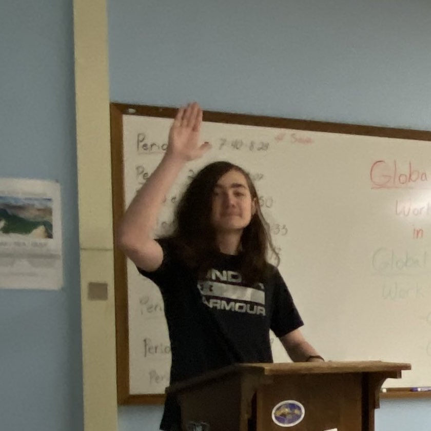

I like computers.

As of gaming, I really enjoy FPS or First Person Shooter type games. Ive always enjoyed shooter games like CallOfDuty (Especially zombies), aswell as games that take it to another level, such as The Finals or Splitgate. I do have a heavy interest on FPS games, however I do enjoy other game genres such as; Horror like Phasmophobia, VR like Beatsaber, and Sandboxes like Minecraft.
What made this possible is my computer, but before all of this I only started off with a gameboy playing Sims, then I got my first xbox.
After that I have increasingly got more and more interested in gaming. I kept upgrading my gaming setup, and then I eventually wanted
to build myself a computer in 2020. Over the 3 years ive had it has given me a path to technology I never have thought I would have taken.
Ive learned to build discord bots, create windows applications, make games in game engines like Unity and UnrealEngine, learn programming languages, and more.
The programming languages I know how to create a simple hello world statement in:
My current top games are Beatsaber, Counter-Strike 2, Call of Duty-Black Ops 3 (Zombies), Outlast 2, The Finals, and Rocket League.
The current albums I like are A Great Chaos by Ken Carson, Blood Rushing Like Current Through A Powerline by Acloudyskye, Safe Travels by untilJapan, and Scriptures by DevStacks
I love W3Schools because it was the building block of my programming knowledge,
aswell as reviewing them.
I like netflix because it has a great selection of movies and shows I enjoy watching,